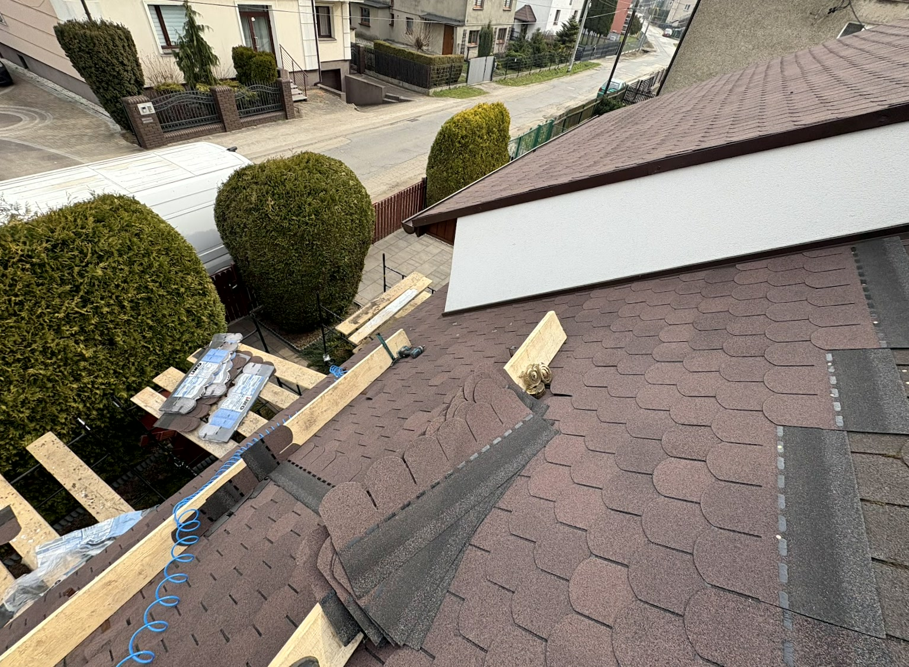
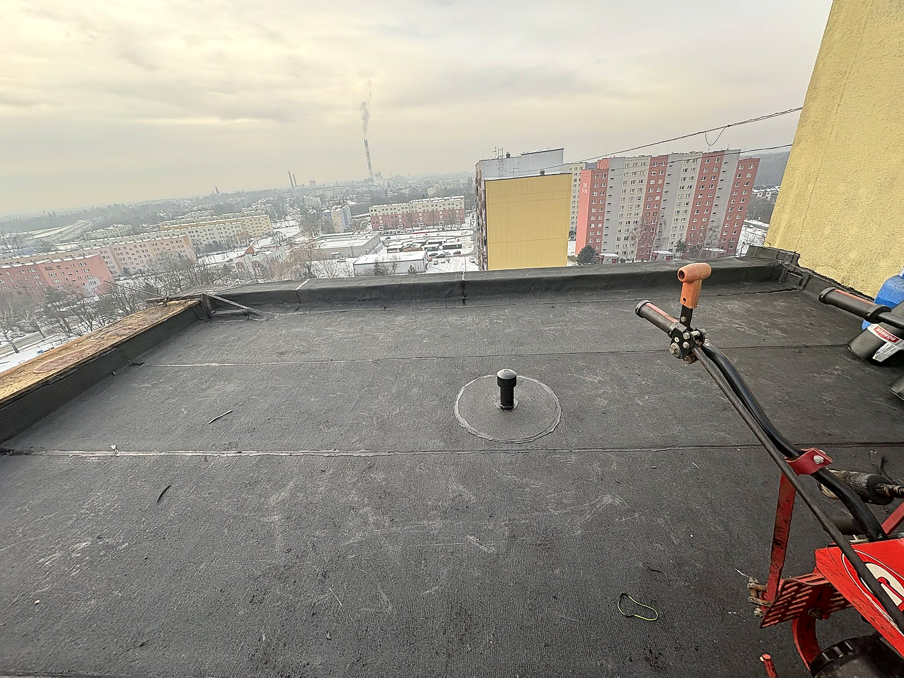
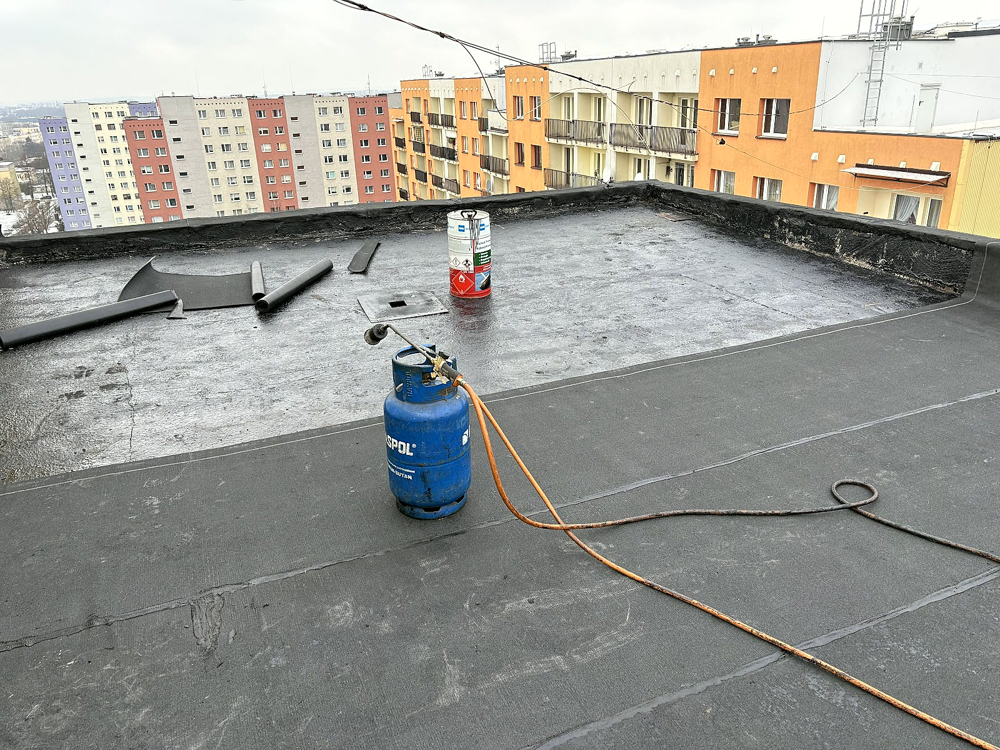
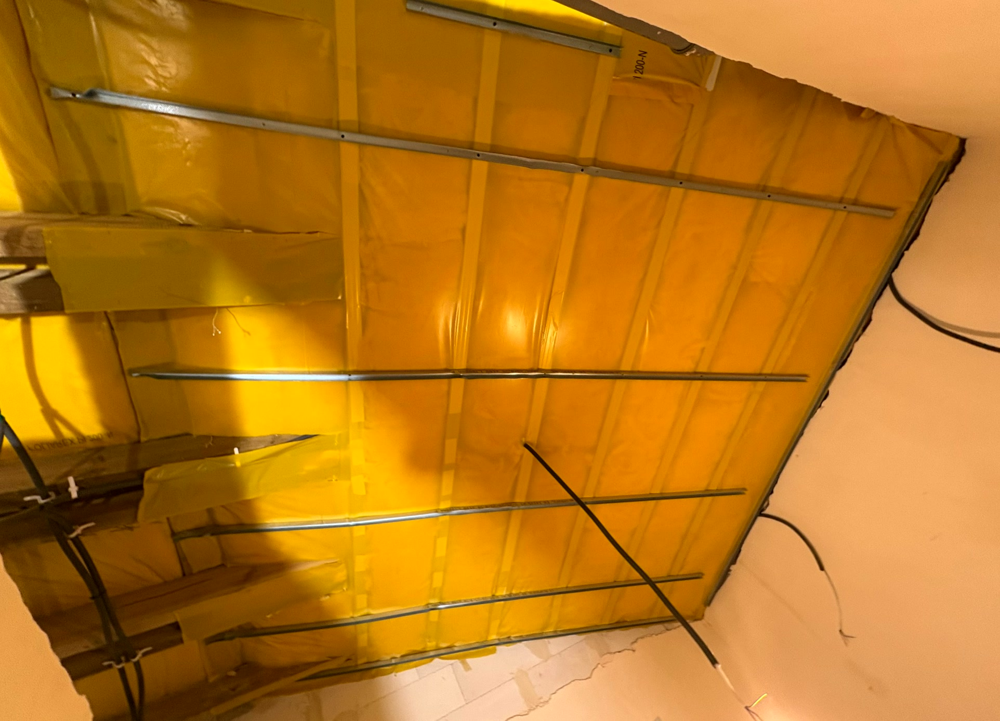
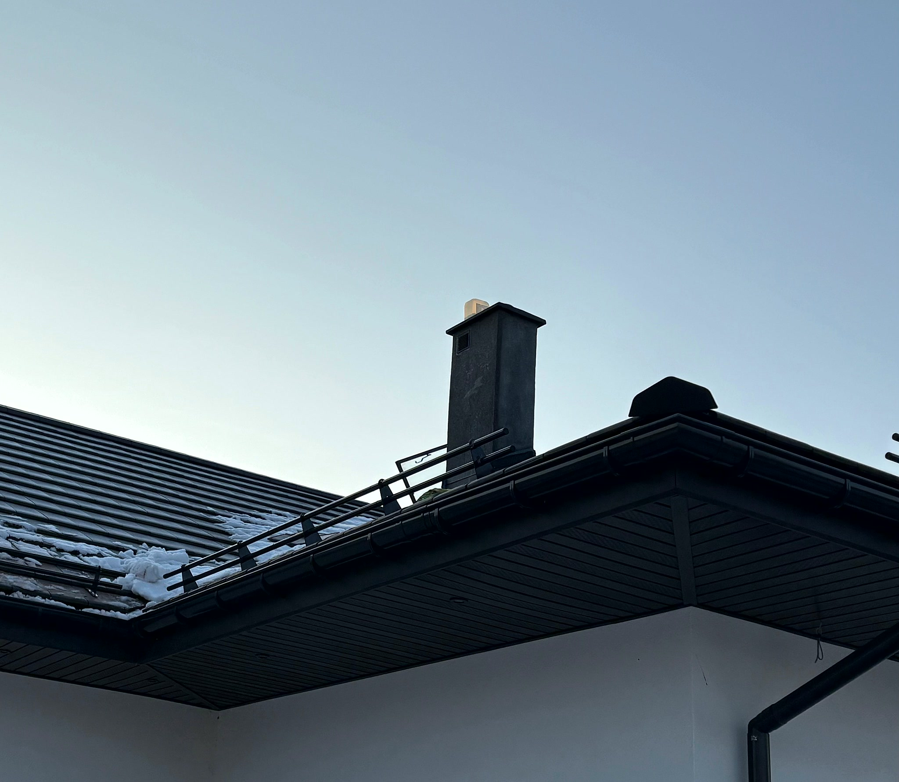
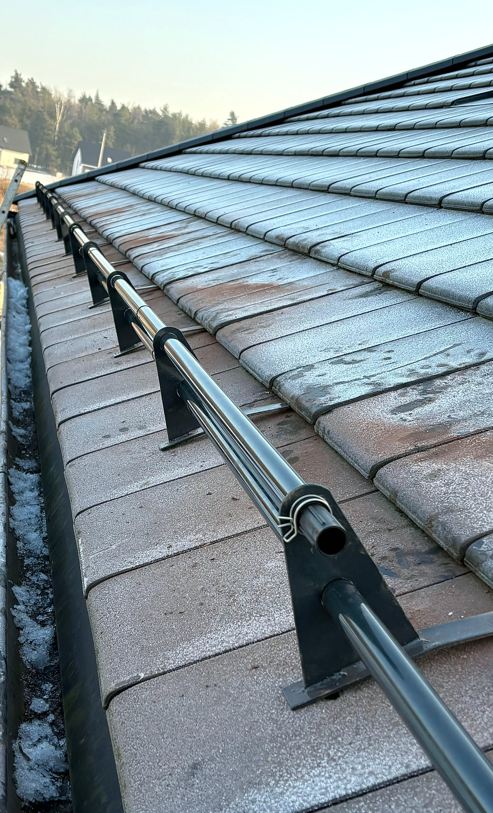
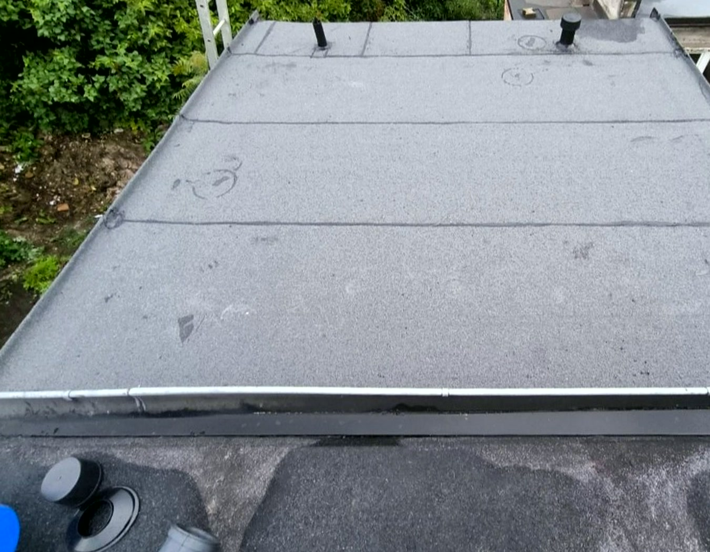

Co robię

Pokrycia dachowe
Stare pokrycie do zdjęcia albo nowy dom czeka na dach? Kładę papę termozgrzewalną, gont bitumiczny i pokrycia z blachy, naprawiam też dachy z dachówki ceramicznej. Pokrycie dobieram do kąta połaci i konstrukcji, a nie do tego, co zalega w hurtowni.

Remonty i naprawy dachów
Ciemna plama na suficie po każdym deszczu? Szukam miejsca, którędy naprawdę wchodzi woda - po krokwi potrafi spłynąć kilka metrów od plamy - i często to obróbka przy kominie, nie pokrycie. Naprawiam przyczynę, a po pierwszym porządnym deszczu sprawdzam, czy zostało sucho. Dopiero wtedy uznaję pracę za skończoną.

Ocieplenie dachu i poddasza
Ocieplam dachy i poddasza od środka: izolacja między krokwiami, folia paroizolacyjna sklejona na zakładach i ruszt pod płyty. Po pracy zostaje czyste poddasze, a nie ścinki i pył rozniesione po całym domu.

Rynny i obróbki blacharskie
Rynna przelewa się w jednym miejscu albo odchodzi od okapu? Ustawiam spadki na nowo, wymieniam skorodowane odcinki i poprawiam mocowania, zamiast od razu sprzedawać całe orynnowanie. Obróbki komina, kosza i okapu robię z blachy dobranej do pokrycia - dach wygląda na skończony, bo jest skończony.

Kominy i płotki śniegowe
Komin obrabiam blachą dopasowaną do pokrycia, tak żeby woda spływała po dachu, a nie wchodziła pod niego. Na połaciach montuję płotki śniegowe, żeby zsuwający się śnieg nie zrywał rynien.

Dachy płaskie i papa
Garaż, taras albo płaski dach nad domem? Zgrzewam papę termozgrzewalną dobrej jakości i pilnuję spadków, żeby woda nie stała w kałużach na środku. Stare, spękane warstwy zrywam albo zostawiam jako podkład - zależnie od tego, co pokaże odkrywka, nie od widzimisię.
Która z usług Cię interesuje?
Napisz, co chcesz zrobić - odpowiemy z propozycją i wyceną.